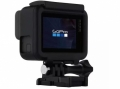

Hero 5比上一代更加易用，继续沿用4K分辨率，和一键拍照等功能，软件交互也将比Hero 4提升一大截，设置选项在屏幕中的占比缩小，并且集中分部在屏幕边缘。其独特创新机身自带防水即可下潜10米，内置GPS以及自动同步云端存储功能，电子增稳。
可下水，方便携带，轻巧耐用，非常适合在特殊环境下使用。视频采用的是4k，照片基本上可以用。17年1月去埃及和迪拜，除了佳能6D，还带了索尼FS5和狗5，结果大部分情况下视频拍摄用的是狗5，最终效果还是可以接受的。
小巧、方便，功能够用，素质不错，延时摄影功能很强大
电池不是很耐用，多备几块电池是非常必须的